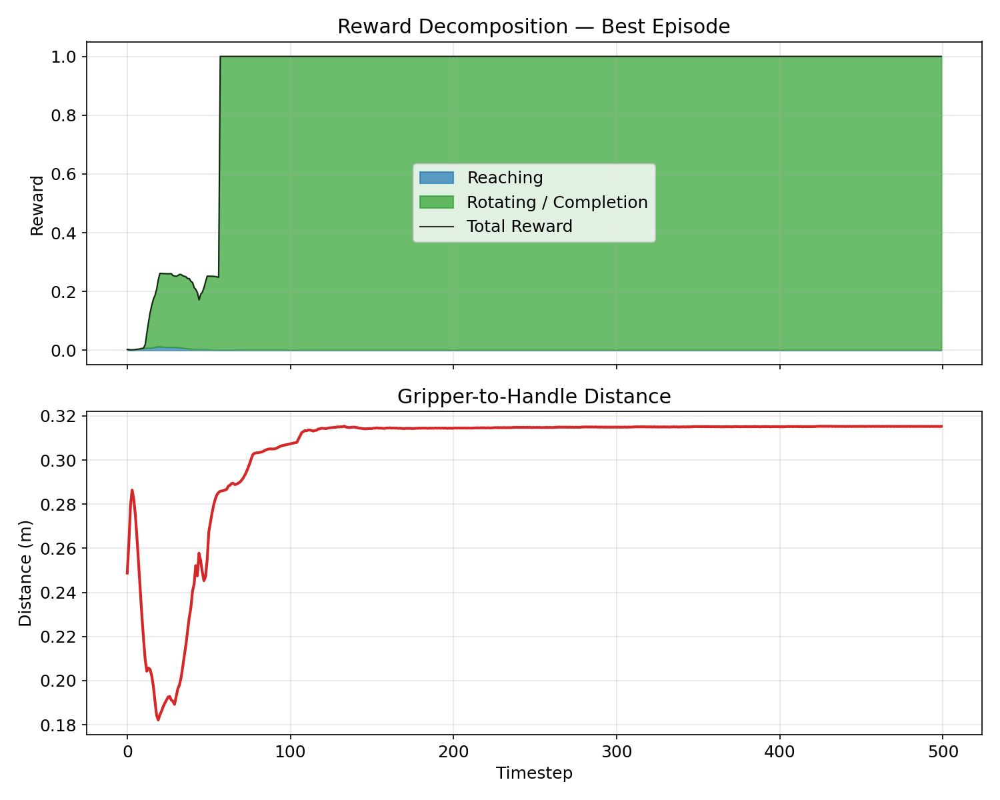
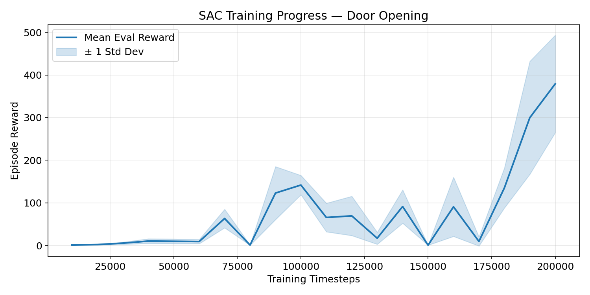
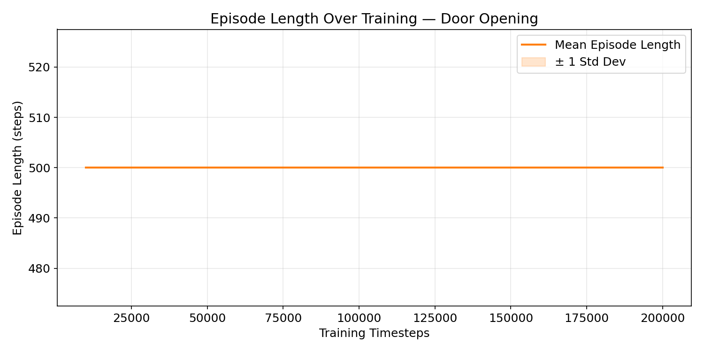
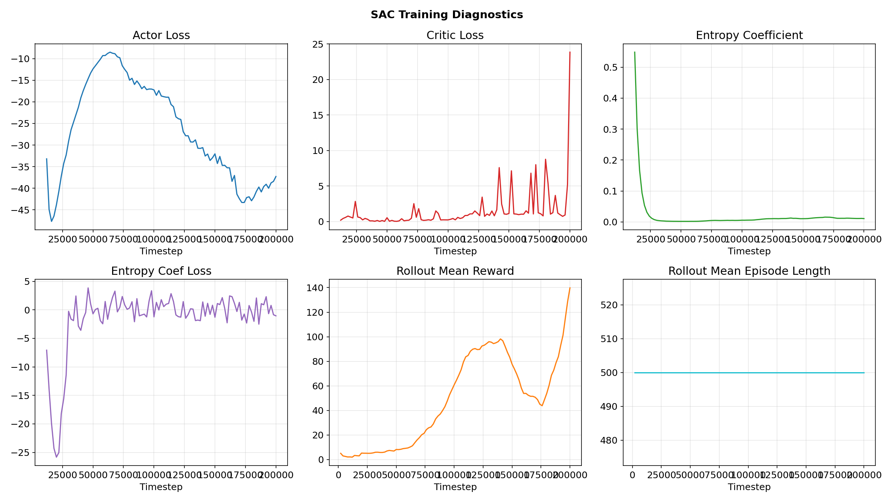
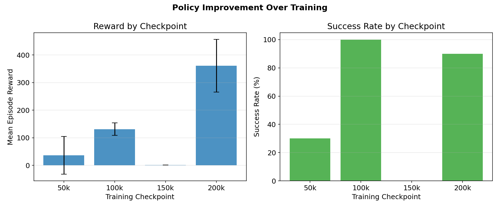
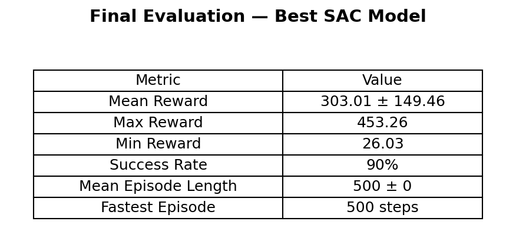
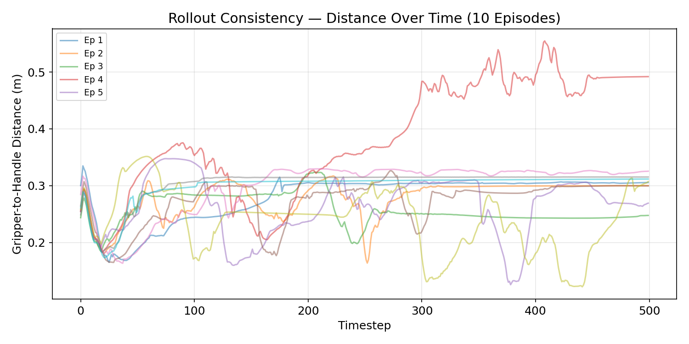
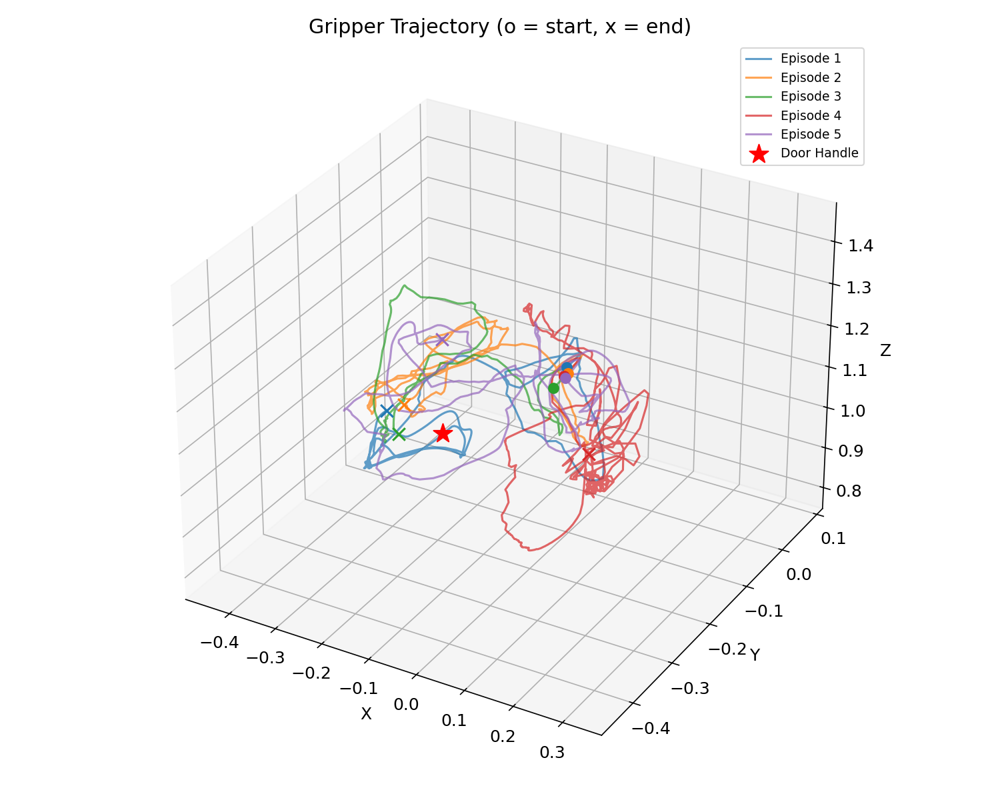
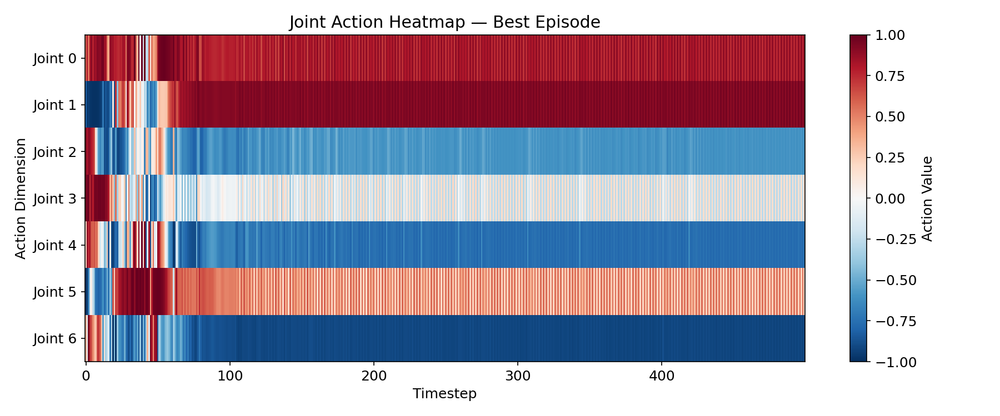

Training a 7-DoF Panda robot arm to open a door using Soft Actor-Critic (SAC) in the robosuite simulation environment.
Watch the trained SAC agent open a door in real time.
The goal of this project is to train a simulated robot arm to open a door entirely through reinforcement learning — no hand-coded motion planning or trajectory optimization. The robot must discover on its own how to reach for the door handle, close its gripper, rotate the latch, and pull the door open. Below we describe the specific environment setup and what makes this task non-trivial for an RL agent.
Door — reach the handle, grasp it, rotate the latch, and pull the door openThe agent must discover a sequence of coordinated behaviors through trial and error:
Each sub-step must succeed for the overall task to complete. A failure at any stage (e.g., mis-grasping the handle) means the entire episode fails.
In reinforcement learning, the reward function is the only signal the agent receives about whether it is doing well or poorly. A poorly designed reward can cause the agent to learn unintended behaviors (reward hacking) or fail to learn at all. For a sequential task like door opening, the reward must provide a gradient that guides the agent through each phase — reaching, grasping, rotating, and pulling — without rewarding any single phase so much that the agent stops progressing.
The robosuite Door environment includes a built-in shaped reward with three components. These provide a reasonable starting point, but as we discovered, they have a critical blind spot:
0.25 × (1 − tanh(10 × dist)) — smooth gradient toward the handleAfter analyzing the baseline reward, we identified a critical gap: there is no reward signal for grasping. The reaching reward maxes out at 0.25 when the gripper is near the handle, and the rotating reward only activates once the handle is already turning — but the agent receives zero feedback for the act of closing its fingers around the handle. This means the agent must randomly discover that gripping leads to handle rotation, which is a difficult exploration problem. To address this, we added three shaping terms in our Gymnasium wrapper, layered on top of the base reward without modifying robosuite’s source code:
_check_grasp(). Bridges the reaching → rotating gap.To verify that our reward design works as intended, we decompose the reward signal over a single successful episode. The plot below shows the reaching component (blue) and rotating/completion component (green) stacked over time, along with the gripper-to-handle distance. We can clearly see the agent’s strategy: it first closes the distance to the handle (reaching reward climbs), then once contact is made, it begins rotating the latch (green component activates), and finally the door opens (completion bonus).

We trained the SAC agent for 200,000 environment steps (~40 minutes on a MacBook Pro with 32 GB RAM, no GPU). Every 10,000 steps, we paused training and evaluated the current policy over 10 episodes with deterministic actions. The plots below show how the agent’s performance evolves over the course of training, along with internal SAC diagnostics that confirm the algorithm is learning stably.


Beyond the reward curve, we monitor SAC’s internal training signals to verify that learning is proceeding correctly. The critic loss measures how accurately the value network predicts future rewards — it should decrease and stabilize as training progresses. The actor loss reflects how well the policy maximizes the critic’s Q-values. The entropy coefficient is automatically tuned by SAC: it starts high (encouraging exploration) and decreases as the policy becomes more confident in its actions. These diagnostics were extracted directly from TensorBoard event files.

To visualize how the policy improves over the course of training, we saved model checkpoints every 50,000 steps and evaluated each one over 10 episodes. The bar charts below show both mean reward and success rate at each checkpoint. The 50k checkpoint barely reaches the handle; by 200k, the agent reliably opens the door in the majority of episodes.

To rigorously measure the final policy’s performance, we loaded the best saved model (selected by highest evaluation reward during training) and ran it for 10 episodes with deterministic action selection. The metrics below summarize the agent’s success rate, average reward, and consistency. An episode is counted as a “success” if the door is fully opened (reward reaches 1.0 at any timestep).

A key question beyond raw success rate is: how consistent is the policy? If the agent succeeds 80% of the time but follows wildly different strategies each episode, it may be relying on luck rather than a learned skill. The plot below overlays the gripper-to-handle distance over time for all 10 evaluation episodes. Tightly clustered lines indicate that the agent follows a repeatable strategy — it consistently approaches the handle along a similar path and at a similar speed.

Beyond aggregate metrics, we want to understand what the policy actually learned. Did it discover an efficient reach-and-pull strategy, or is it flailing until it gets lucky? The visualizations below examine the agent’s physical behavior: how it moves its end-effector through space and how it coordinates its 8 action dimensions over time.
This interactive 3D plot shows the path of the robot’s gripper through space for 5 evaluation episodes. You can rotate the view to see the trajectory from different angles. The red diamond marks the door handle position. Notice how all trajectories converge toward the handle from different starting positions — this shows the policy has learned a generalizable reaching strategy, not just a memorized path for one configuration.


We chose Soft Actor-Critic (SAC) as our RL algorithm after considering several alternatives. PPO is the most commonly used algorithm in RL research, but SAC is generally preferred for continuous control tasks with expensive simulation steps because of its superior sample efficiency. Below we describe the algorithm, our hyperparameter choices, and the software stack that ties everything together.
Soft Actor-Critic (SAC) is an off-policy actor-critic algorithm that maximizes both expected reward and entropy. It maintains a replay buffer of past transitions and learns from them repeatedly, making it significantly more sample-efficient than on-policy methods like PPO which discard data after each update.
| Parameter | Value |
|---|---|
| Policy network | MLP (256, 256) |
| Learning rate | 3 × 10−4 |
| Replay buffer size | 1,000,000 |
| Batch size | 256 |
| Discount (γ) | 0.99 |
| Soft update (τ) | 0.005 |
| Learning starts | 10,000 steps |
| Total training | 200,000 steps |
| Eval frequency | Every 10,000 steps (10 episodes) |
This section reflects on the key takeaways from the project: what design decisions had the most impact, where the current approach falls short, and what directions could improve performance in future work.